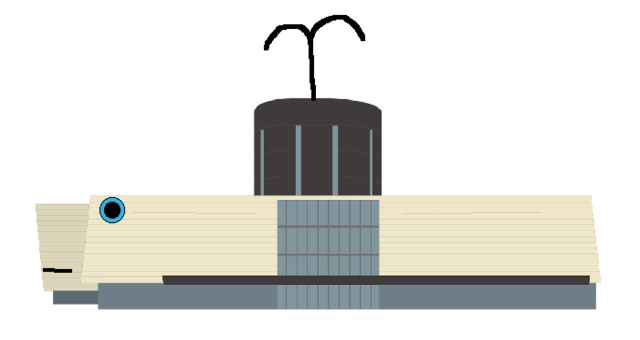

<ons-page>
    <ons-toolbar>
        <div class="center">凾館駅</div>
    </ons-toolbar>


    <div style="text-align: center">
        <br>
         <span id="sampleOutputA" style="margin-left: 10px;">5</span>
         
         <span id="php" style="margin-left: 10px;">50</span>
         <ons-button
           onclick="countDownA();damage();"
            id="5" style="display:;">
           こうげき
       </ons-button>
       
        
         <ons-button
            onclick="myNavigator.pushPage('page2.html')"
              id="6"style="display:;">
            まもる
        </ons-button>
        
         <ons-button
            onclick="myNavigator.pushPage('page2.html')"
              id="7"style="display:;">
            にげる
        </ons-button>
       
       
        <ons-button
            onclick="getid1(); myNavigator.pushPage('goryokaku.html');" id="0"style="display:none;" >
            五稜郭タワー
        </ons-button>
        
         <ons-button
            onclick="getid2(); myNavigator.pushPage('hakodateyama.html');" id="1"style="display:none;">
            函館山
        </ons-button>
        
         <ons-button
            onclick="getid3(); myNavigator.pushPage('akarenga.html');" id="2"style="display:none;">
            赤レンガ
        </ons-button>
        
         <ons-button
            onclick="getid4(); myNavigator.pushPage('yunokawa.html');"  id="3"style="display:none;">
            湯の川
        </ons-button>
       
       
    </div>

</ons-page>